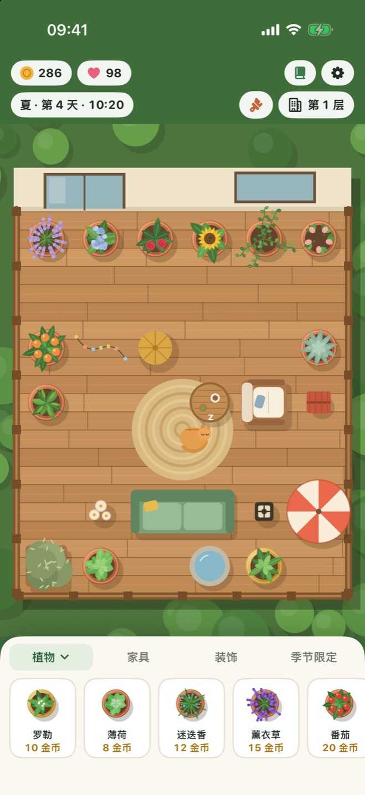
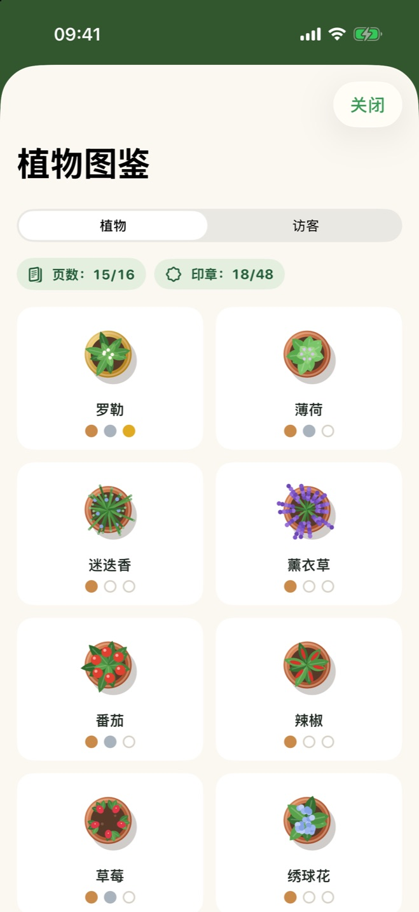
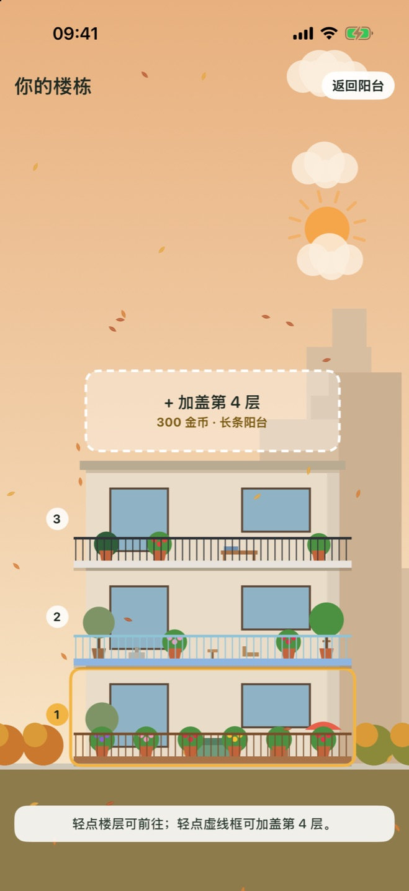

实时生长
游戏里的一天相当于现实中的一小时。短暂而轻松的拜访融入你的日常，回来时总有东西成熟了。
适用于 iPhone 和 iPad
种下香草、花朵和水果，装饰阳台，感受四季更替，迎接长着羽毛和毛茸茸的访客。每天来一点宁静。
把植物拖到阳台上，口渴时浇水，成熟后收获。
摆上沙发、灯笼、喷泉，换上新地面。越温馨的阳台赚得越多，访客也越多。
关闭 App 后花园仍在生长。被遗忘的植物永远不会死掉，只是在等你浇水。
一切都为轻松的日常而设计，没有任何催促。
游戏里的一天相当于现实中的一小时。短暂而轻松的拜访融入你的日常，回来时总有东西成熟了。
春雨帮你浇花，夏日阳光催熟番茄，秋天落叶纷飞，冬天白雪覆盖栏杆。
在网格上摆放家具和装饰，再换上木地板、大理石或马赛克地面，以及新的栏杆。
蝴蝶、蜜蜂、猫头鹰、松鼠和邻居家的猫咪都会来做客。找出每位访客的喜好，说不定有只猫会搬来住。
用生长阶段和收获印章填满植物图鉴，集齐后还能解锁一棵特别的柠檬树。
攒金币加盖新楼层，每层阳台形状都不同，看着你的楼栋随四季变化。
花少量费用雇一位园丁，为每一层口渴的植物浇水，并收获成熟的植物。每四小时可雇用一次。
为你的花园命名并保存，随时都能回到这里。最多可保存十个存档。
开启 iCloud 同步，你的花园就能在 iPhone 和 iPad 之间同步。此功能可选，数据只保存在你自己的 Apple 账户中。



一次免费下载，两种设备通用。在 iPad 上阳台更宽敞，还能看到更多街景。
无论在哪块屏幕上，阳台都保持居中，花园则一直延伸到状态栏周围的边缘。
| iPhone | iOS 17 或更高版本 |
|---|---|
| iPad | iPadOS 17 或更高版本 |
| iPhone Duo | 支持 |
| 价格 | 免费。无广告，无 App 内购买。 |
|---|---|
| 账户 | 无需账户，可离线游玩。 |
| 进度 | 保存在你的设备上；开启同步后，也会保存在你自己的 iCloud 中。 |
Balcony Bloom 没有服务器、没有分析、没有广告。你在游戏中的一切都不会传到开发者手里。 阅读隐私政策